Строительная компания «Русские поместья»
Каркасные дома под ключ от производителя
Строим дома в Санкт-Петербурге и Ленинградской области от 2 500 000 руб. Фиксируем цену договором. Гарантия до 25 лет. Получите каталог с планировками, ценами и комплектациями, чтобы выбрать дом под свой бюджет.
Каталог проектов с планировками, ценами и комплектациями
13 лет
в загородном строительствеБолее 120
построенных домовПостроенные нами
каркасные дома
01–02/13
Панорамное остекление01 Терраса вдоль фасада02 Дом в зелёном окружении03 Деревянный фасад зимой04 Крытая терраса05 Высокое остекление фасада06 Панорамный фасад07 Фасад в вечернем освещении08 Открытая терраса09 Дом с крыльцом10 Дом с крытой террасой11 Одноэтажный дом зимой12 Дом зимой13
Листайте стрелками или перетаскивайте фотографииЛистайте фотографии пальцем
13 фотографий